6 Faire des cartes avec R
De nombreuses données comportent des informations de géolocalisation. Il est alors naturel d’utiliser des cartes pour les visualiser. On peut généralement s’intéresser à deux types de cartes :
- statiques : des cartes figées que l’on pourra exporter aux formats pdf ou png par exemple, ce type est généralement utilisé pour des rapports ;
- dynamiques ou interactives : des cartes que l’on pourra visualiser dans un navigateur et sur lesquelles on pourra zoomer ou obtenir des informations auxiliaires lorsqu’on clique sur certaines parties de la carte.
De nombreux packages R permettent d’obtenir des cartes. Dans cette partie, on s’intéressera aux packages ggmap et sf pour les cartes statiques et leaflet pour les cartes interactives.
6.1 Le package ggmap
Nous montrons dans cette section comment récupérer des fonds de carte et ajouter quelques informations à l’aide de ggmap. Pour plus de détails sur ce package, on pourra consulter cet article pour plus de détails.
ggmap permet de récupérer facilement des fonds de carte. Par exemple :
library(tidyverse)
library(ggmap)
us <- c(left = -125, bottom = 25.75, right = -67, top = 49)
map <- get_stamenmap(us, zoom = 5, maptype = "toner-lite")
ggmap(map)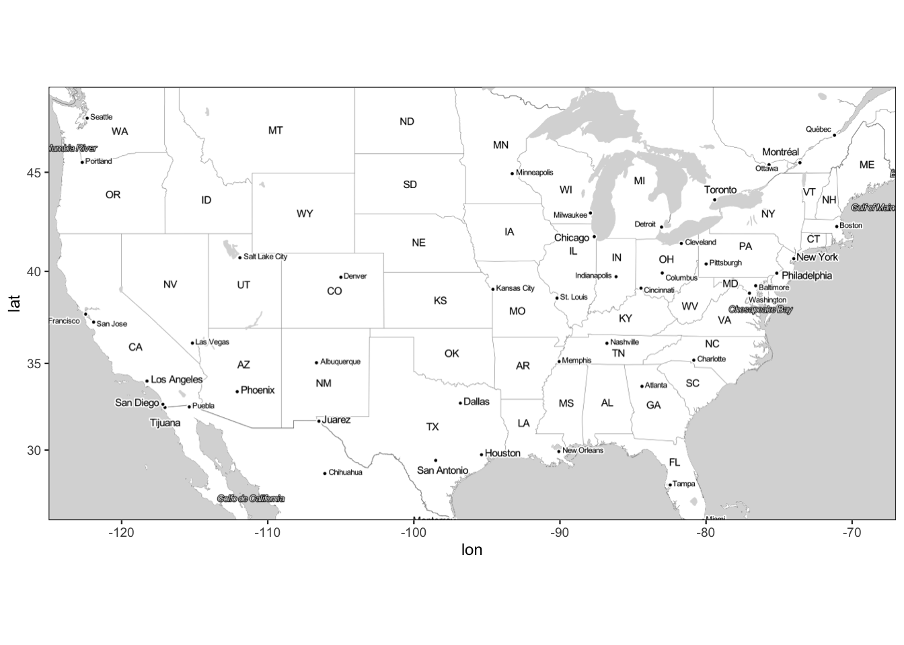
Pour l’Europe on fait
europe <- c(left = -12, bottom = 35, right = 30, top = 63)
get_stamenmap(europe, zoom = 5,"toner-lite") |> ggmap()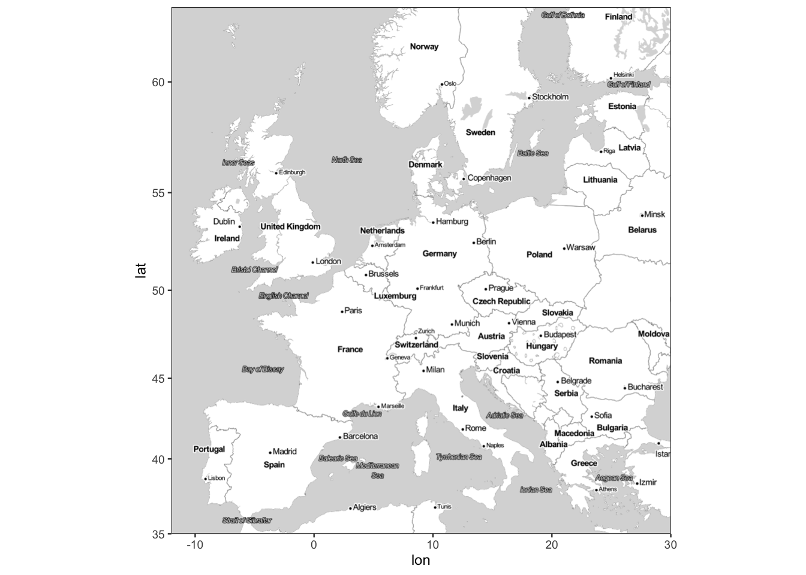
On peut également changer le fond de carte
get_stamenmap(europe, zoom = 5,"toner-background") |> ggmap()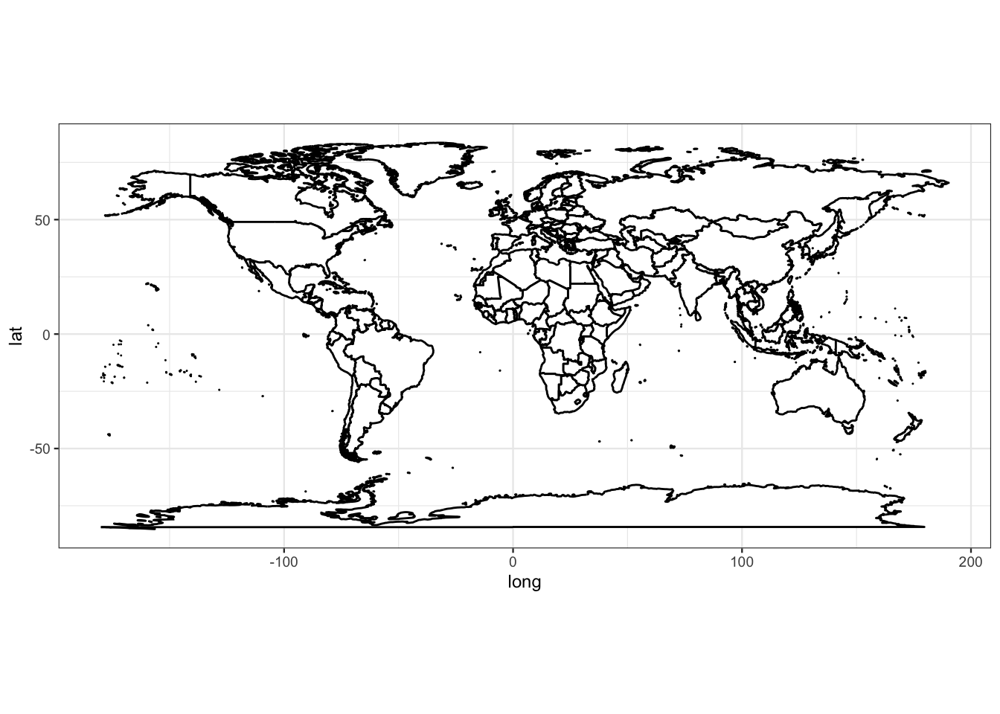
Pour la France, on aura
fr <- c(left = -6, bottom = 41, right = 10, top = 52)
get_stamenmap(fr, zoom = 5,"toner-lite") |> ggmap()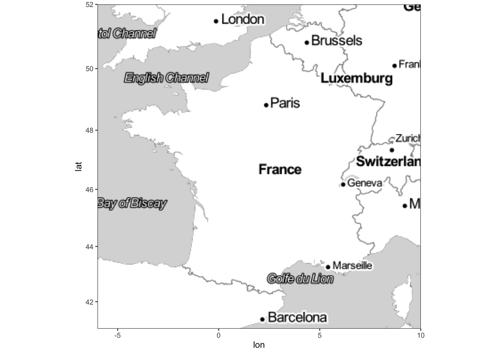
La fonction geocode de tiygecoder permet de récupérer des latitudes et longitudes à partir d’adresses :
tbl <- tibble(address=c("the white house","Paris","Rennes"))
library(tidygeocoder)
tbl |> geocode(address)
## # A tibble: 3 × 3
## address lat long
## <chr> <dbl> <dbl>
## 1 the white house 38.9 -77.0
## 2 Paris 48.9 2.35
## 3 Rennes 48.1 -1.68Exercice 6.1 (Populations des grandes villes de france)
Récupérer les latitudes et longitudes de Paris, Lyon et Marseille et représenter ces 3 villes sur une carte de la France.
Le fichier villes_fr.csv contient les populations des 30 plus grandes villes de france. Représenter à l’aide d’un point les 30 plus grandes villes de France. On fera varier la taille du point en fonction de la population en 2014.
Attention, la ville de Lille n’est pas bien écrite ! Il faut la renommer :
On calcule les coordonnées avec geocode et on représente les ville. Pour la taille des points, il suffit d’ajouter size=
2014dans l’aesdugeom_point.
6.2 Cartes avec contours, le format shapefile
ggmap permet de récupérer facilement des fonds de cartes et de placer des points dessus avec la syntaxe ggplot. Cependant, de nombreuses fonctions de ca package nécessitent une API et il est difficile de définir des contours (frontières de pays, départements ou régions) avec ggmap. Nous proposons ici de présenter brièvement le package sf qui va nous permettre de créer des cartes “avancées”, en gérant les contours à l’aide d’objets particuliers mais aussi en prenant en compte différents systèmes de coordonnées. En effet, la terre n’est pas plate… mais une carte est souvent visualisée en 2D, il faut par conséquent réaliser des projections pour représenter des lieux définis par une coordonnée (comme la latitude et la longitude) sur une carte 2D. Ces projections sont généralement gérées par les packages qui permettent de faire de la cartographie comme sf. On pourra trouver de la documentation sur ce package aux url suivantes :
- https://statnmap.com/fr/2018-07-14-initiation-a-la-cartographie-avec-sf-et-compagnie/
- dans les vignettes sur la page du cran de ce package : https://cran.r-project.org/web/packages/sf/index.html
Ce package propose de définir un nouveau format sf adapté à la cartographie. Regardons par exemple l’objet nc
library(sf)
nc <- st_read(system.file("shape/nc.shp", package = "sf"), quiet = TRUE)
class(nc)
## [1] "sf" "data.frame"
nc
## Simple feature collection with 100 features and 14 fields
## Geometry type: MULTIPOLYGON
## Dimension: XY
## Bounding box: xmin: -84.32385 ymin: 33.88199 xmax: -75.45698 ymax: 36.58965
## Geodetic CRS: NAD27
## First 10 features:
## AREA PERIMETER CNTY_ CNTY_ID NAME FIPS FIPSNO CRESS_ID BIR74 SID74
## 1 0.114 1.442 1825 1825 Ashe 37009 37009 5 1091 1
## 2 0.061 1.231 1827 1827 Alleghany 37005 37005 3 487 0
## 3 0.143 1.630 1828 1828 Surry 37171 37171 86 3188 5
## 4 0.070 2.968 1831 1831 Currituck 37053 37053 27 508 1
## 5 0.153 2.206 1832 1832 Northampton 37131 37131 66 1421 9
## 6 0.097 1.670 1833 1833 Hertford 37091 37091 46 1452 7
## 7 0.062 1.547 1834 1834 Camden 37029 37029 15 286 0
## 8 0.091 1.284 1835 1835 Gates 37073 37073 37 420 0
## 9 0.118 1.421 1836 1836 Warren 37185 37185 93 968 4
## 10 0.124 1.428 1837 1837 Stokes 37169 37169 85 1612 1
## NWBIR74 BIR79 SID79 NWBIR79 geometry
## 1 10 1364 0 19 MULTIPOLYGON (((-81.47276 3...
## 2 10 542 3 12 MULTIPOLYGON (((-81.23989 3...
## 3 208 3616 6 260 MULTIPOLYGON (((-80.45634 3...
## 4 123 830 2 145 MULTIPOLYGON (((-76.00897 3...
## 5 1066 1606 3 1197 MULTIPOLYGON (((-77.21767 3...
## 6 954 1838 5 1237 MULTIPOLYGON (((-76.74506 3...
## 7 115 350 2 139 MULTIPOLYGON (((-76.00897 3...
## 8 254 594 2 371 MULTIPOLYGON (((-76.56251 3...
## 9 748 1190 2 844 MULTIPOLYGON (((-78.30876 3...
## 10 160 2038 5 176 MULTIPOLYGON (((-80.02567 3...Ces données contiennent des informations sur les morts subites de nourissons dans des villes de Caroline du Nord. On remarque que l’objet nc est au format sf et data.frame. On peut donc l’utiliser comme un data.frame classique. Le format sf permet l’ajout d’une colonne particulière (geometry) qui délimitera les villes à l’aide de polygones. Une fois l’objet obtenu au format sf, il est facile de visualiser la carte avec un plot classique
plot(st_geometry(nc))
ou en utilisant le verbe geom_sf si on veut faire du ggplot
ggplot(nc)+geom_sf()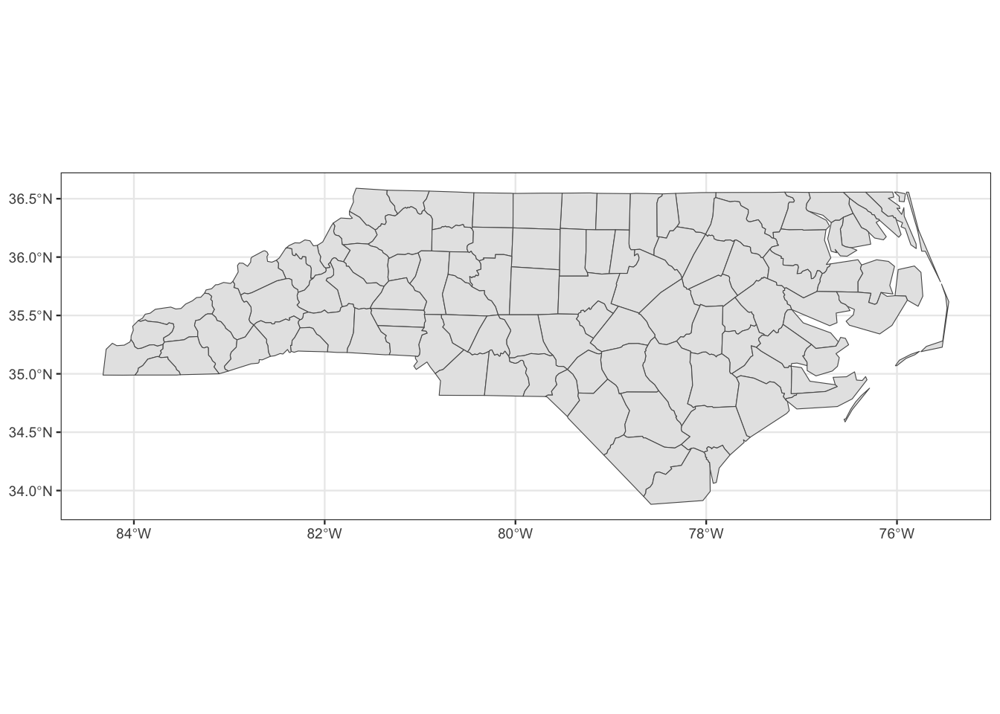
Il devient dès lors facile de colorier des villes et d’ajouter leurs noms :
ggplot(nc[1:3,]) +
geom_sf(aes(fill = AREA)) +
geom_sf_label(aes(label = NAME))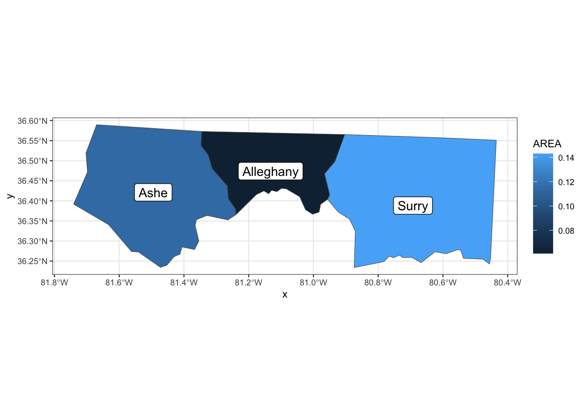
La colonne geometry de nc est au format MULTIPOLYGON, elle permettra donc de délimiter les frontières des villes. Si maintenant on souhaite représenter une ville à l’aide d’un point défini par sa latitude et longitude, il va falloir modifier le format de cette colonne geometry. On peut le faire de la manière suivante :
On récupère les latitudes et longitudes de chaque ville :
coord.ville.nc <- nc |> tidygeocoder::geocode(NAME)On met ces coordonnées au format
MULTIPOINTcoord.ville1.nc <- coord.ville.nc |> select(long,lat) |> filter(long<=-77 & long>=-85 & lat>=33 & lat<=37) |> as.matrix() |> st_multipoint() |> st_geometry() |> st_cast(to="POINT") coord.ville1.nc ## Geometry set for 50 features ## Geometry type: POINT ## Dimension: XY ## Bounding box: xmin: -83.83378 ymin: 34.27511 xmax: -77.01151 ymax: 36.503 ## CRS: NA ## First 5 geometries: ## POINT (-81.50766 36.43936) ## POINT (-81.13408 36.503) ## POINT (-80.70138 36.41356) ## POINT (-77.01151 36.35605) ## POINT (-80.22881 36.4121)On indique que ces coordonnées sont des latitudes et longitude et on ajoute la colonne aux données initiales
st_crs(coord.ville1.nc) <- 4326On peut enfin représenter la carte avec les frontières et les points :
ggplot(nc)+geom_sf()+geom_sf(data=coord.ville1.nc)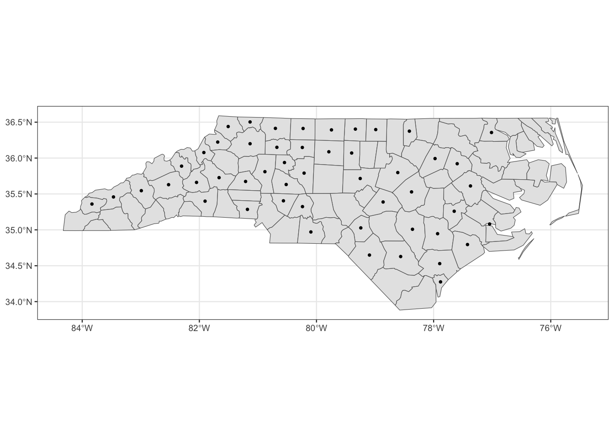
Le package sf possède également des fonctions très utiles pour traiter des données cartographiques, on peut citer par exemple :
st_distancequi permet de calculer des distances entre coordonnées ;st_centroidpour calculer le centre d’une région ;- …
On peut ainsi représenter les centres des villes délimitées par les polygones des données nc avec
nc2 <- nc |> mutate(centre=st_centroid(nc)$geometry)
ggplot(nc2)+geom_sf()+geom_sf(aes(geometry=centre))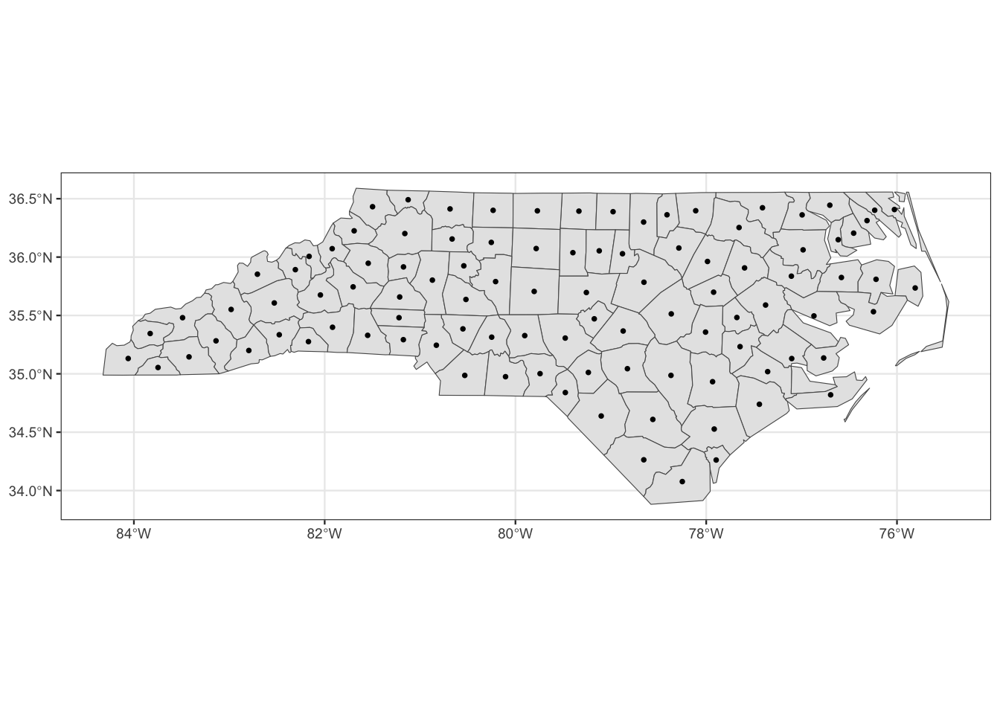
Exercice 6.2 (Première carte avec sf) Nous nous servons de la carte GEOFLAR proposée par l’Institut Géographique National pour récupérer un fond de carte contenant les frontières des départements français. Cette carte est disponible sur le site http: //professionnels.ign.fr/ au format shapefile, elle se trouve dans l’archive dpt.zip. Il faut décompresser pour reproduire la carte. Grâce au package sf, cette carte, contenue dans la série de fichiers département du répertoire dpt, peut être importée dans un objet R :
dpt <- read_sf("data/dpt")
ggplot(dpt) + geom_sf()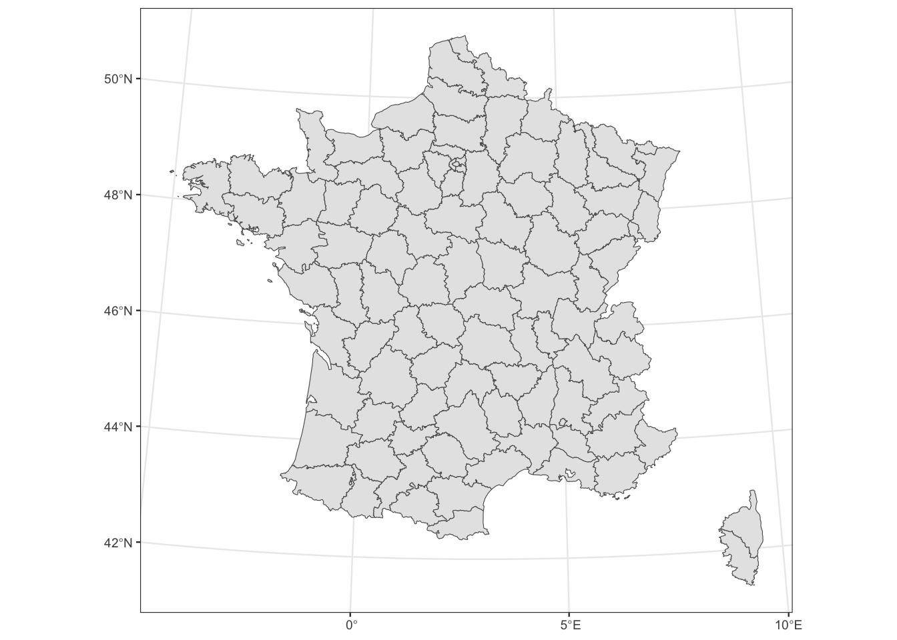
Refaire la carte de l’Exercice 6.1 sur ce fond de carte.
On définit tout d’abord un geometry au format MULTIPOINT. On le transforme ensuite en un “vecteur” de longueur 30 au format POINT que l’on ajoute dans la dataframe qui contient les coordonnées des villes.
On peut maintenant visualiser la carte demandée.
Exercice 6.3 (Visualisation de taux de chômage avec sf) Nous souhaitons visualiser graphiquement les différences de taux de chômage par département entre deux années. Pour cela, nous disposons de chaque taux mesuré aux premiers trimestres des années 2006 et 2011 (variables TCHOMB1T06, TCHOMB1T11) qui se trouvent dans le jeu de données tauxchomage.csv.
Importer le jeu de données.
Faire la jointure de cette table avec celle des frontières des départements. On pourra utiliser inner_join.
Comparer les taux de chômage en 2006 et 2011 (on le fera avec une carte pour les taux en 2006 et une autre pour les taux en 2011).
6.2.1 Challenge 1 : carte des températures avec sf
On souhaite ici faire une carte permettant de visualiser les température en France à un moment donné. Les données se trouvent sur le site des données publiques de meteo france. On peut notamment récupérer
- les températures observées dans certaines stations en France les 15 derniers jours dans le lien téléchargement. On utilisera uniquement les identifiants de la station ainsi que la température observée (colonne
t). - la géolocalisation de ces stations dans le lien documentation
Importer les 2 bases nécessaires. On pourra les lire directement sur le site. Convertir les degrés Kelvin en degrés Celsius et faire la jointure de ces bases.
Éliminer les station d’outre mer (on pourra conserver uniquement les stations qui ont une longitude entre -20 et 25). On appellera ce tableau station1. Visualiser les stations sur la carte contenant les frontières des départements français.
Créer un dataframe au format sf qui contient les températures des stations ainsi que leurs coordonnées dans la colonne geometry. On pourra commencer avec
station2 <- station1 |> select(Longitude,Latitude) |> as.matrix() |> st_multipoint() |> st_geometry() st_crs(station2) <- 4326 station2 <- st_cast(station2, to = "POINT")Représenter les stations sur une carte de france. On pourra mettre un point de couleur différente en fonction de la température.
On obtient les coordonnées des centroïdes des départements à l’aide de
centro <- st_centroid(dpt$geometry) centro <- st_transform(centro,crs=4326)On déduit les distances entre ces centroïdes et les stations avec (df étant la table sf obtenue à la question 3).
DD <- st_distance(df,centro)Prédire la température de chaque département à l’aide de la règle du 1 plus proche voisin (la température du département \(i\) sera celle de la station la plus proche du centroïde de \(i\)).
Colorier les départements en fonction de la température prédite dans le département. On pourra faire varier le dégradé de couleur du jaune (pour les faibles températures) au rouge (pour les fortes).
On peut supprimer les lignes de frontières avec
6.2.2 Trouver des cartes au format shapefile
Le plus souvent on ne va pas construire les fonds de carte au format shapefile “à la main” et il est bien entendu important de récupérer ces fonds de carte au préalable. La méthode la plus courante consiste à taper les bons mots clefs sur un moteur de recherche… On pourra par exemple utiliser :
des packages R, par exemple
rnaturalearth:world <- rnaturalearth::ne_countries(scale = "medium", returnclass = "sf") class(world) ## [1] "sf" "data.frame" ggplot(data = world) + geom_sf(aes(fill = pop_est)) + scale_fill_viridis_c(option = "plasma", trans = "sqrt")+theme_void()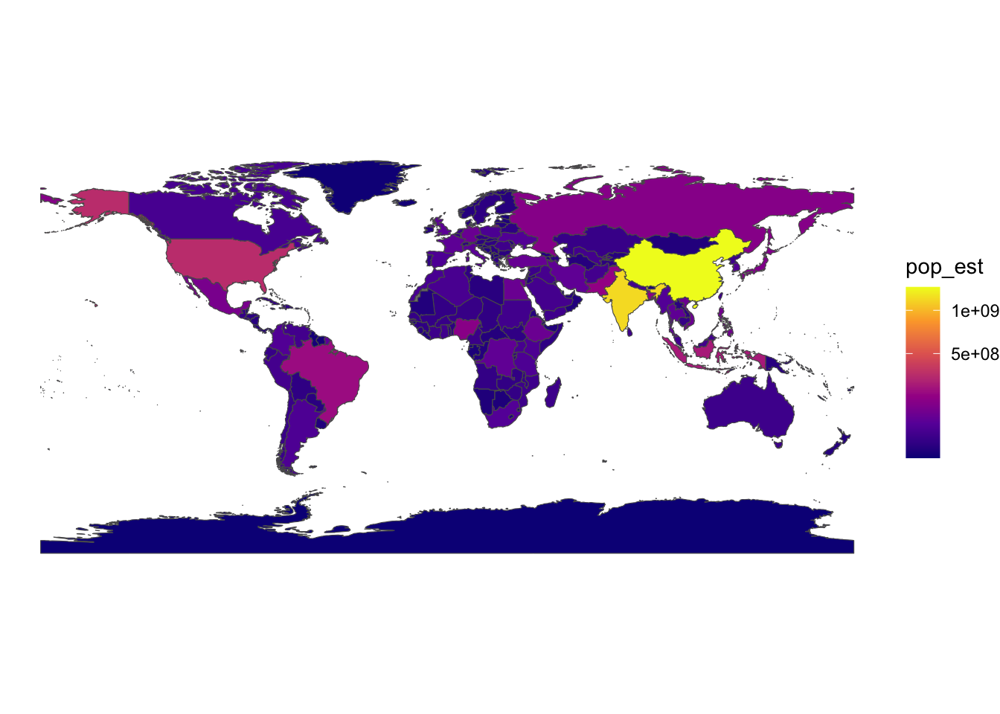
On peut aussi visualiser la térre comme une sphère :
ggplot(data = world) + geom_sf() + coord_sf(crs = "+proj=laea +lat_0=52 +lon_0=10 +x_0=4321000 +y_0=3210000 +ellps=GRS80 +units=m +no_defs ")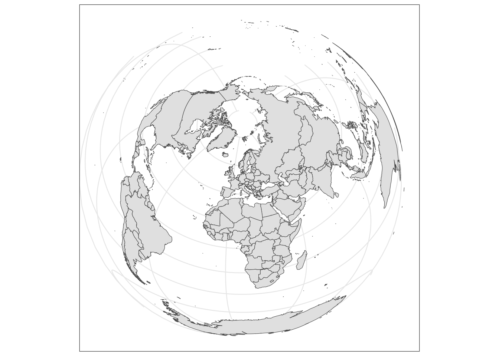
Voir https://www.r-spatial.org/r/2018/10/25/ggplot2-sf.html pour plus de détails.
le web, par exemple le site data gouv:
regions <- read_sf("data/regions-20180101-shp/")Attention, la taille des objets peut être très (trop) grande
format(object.size(regions),units="Mb") ## [1] "15.4 Mb"et la construction de la carte peut dans ce cas prendre beaucoup de temps… On peut réduire la taille avec ce type d’outils
library(rmapshaper) regions1 <- ms_simplify(regions) format(object.size(regions1),units="Mb") ## [1] "0.9 Mb" ggplot(regions1)+geom_sf()+ coord_sf(xlim = c(-5.5,10),ylim=c(41,51))+theme_void()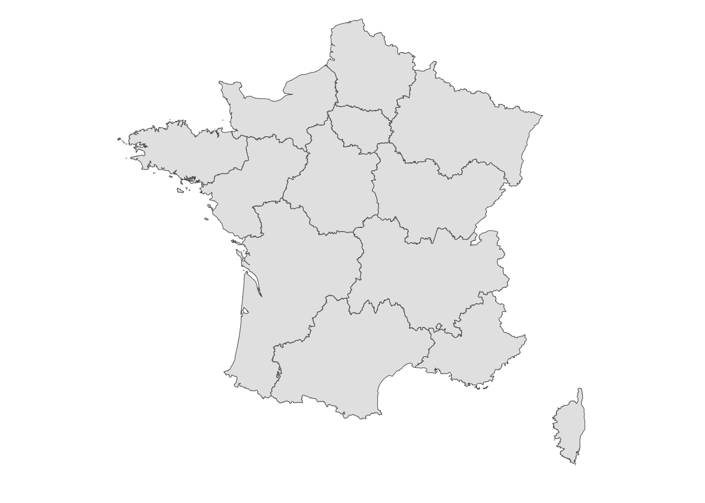
6.3 Cartes interactives avec leaflet
Leaflet est un package permettant de faire de la cartographie interactive. On pourra consulter un descriptif synthétique ici. Le principe est similaire à ce qui a été présenté précédemment : les cartes sont construites à partir de couches qui se superposent. Un fond de carte s’obtient avec les fonctions leaflet et addTiles
library(leaflet)
leaflet() |> addTiles()On dispose de plusieurs styles de fonds de cartes (quelques exemples ici) :
Paris <- tibble(V="Paris") |> tidygeocoder::geocode(V)
m2 <- leaflet() |> setView(lng = as.numeric(Paris[1,3]),
lat = as.numeric(Paris[1,2]), zoom = 12) |>
addTiles()
m2 |> addProviderTiles("Stamen.Toner")m2 |> addProviderTiles("Esri.NatGeoWorldMap")m2 |>
addProviderTiles("Stamen.Watercolor") |>
addProviderTiles("Stamen.TonerHybrid")Il est souvent utile de repérer des lieux sur une carte à l’aide de symboles. On pourra effectuer cela à l’aide des fonctions addMarkers et addCircles, par exemple :
data(quakes)
leaflet(data = quakes[1:20,]) |> addTiles() |>
addMarkers(~long, ~lat, popup = ~as.character(mag))On remarque que l’on utilise ici un tilde pour spécifier qu’on utilise des variables dans un dataframe.
Le caractère interactif de la carte permet d’ajouter de l’information lorsqu’on clique sur un marker (grâce à l’option popup). On peut également ajouter des popups qui contiennent plus d’information, voire des liens vers des sites web :
content <- paste(sep = "<br/>",
"<b><a href='http://www.samurainoodle.com'>Samurai Noodle</a></b>",
"606 5th Ave. S",
"Seattle, WA 98138"
)
leaflet() |> addTiles() |>
addPopups(-122.327298, 47.597131, content,
options = popupOptions(closeButton = FALSE)
)Exercice 6.4 (Popup avec leaflet) Placer un popup localisant l’Université Rennes 2 (Campus Villejean). On ajoutera un lien renvoyant sur le site de l’Université.
6.3.1 Challenge 2 : Visualisation des stations velib à Paris
Plusieurs villes dans le monde ont accepté de mettre en ligne les données sur l’occupation des stations velib. Ces données sont facilement accessibles et mises à jour en temps réel. On dispose généralement de la taille et la localisation des stations, la proportion de vélos disponibles… Il est possible de requêter (entre autres) :
- sur les données Decaux
- sur Open data Paris
- sur vlstats pour des données mensuelles ou historiques ou encore sur Velib pour obtenir des fichiers qui sont rafraîchis régulièrement.
Récupérer les données actuelles de velib disponibles pour la ville de Paris : https://opendata.paris.fr/explore/dataset/velib-disponibilite-en-temps-reel/information/. On pourra utiliser la fonction
read_delimavec l’optiondelim=";".Décrire les variables du jeu de données.
Nous avons de l’information sur la disponibilité, le remplissage… de stations velib parisiennes.
Créer une variable
latitudeet une variablelongitudeà partir de la variableCoordonnées géographiques. On pourra utiliser la fonction separate du packagetidyr.Visualiser les positions des stations sur une carte leaflet. On pourra utiliser l’option
clusterOptions = markerClusterOptions()pour que la carte soit plus claire.La carte est peu lisible, il y a en effet beaucoup de stations et il est difficile de bien les visualiser. Les choses deviennent plus claires en visualisant es groupes de station :
Ajouter un popup qui permet de connaitre le nombre de vélos disponibles (électriques+mécanique) quand on clique sur la station (on pourra utiliser l’option popup dans la fonction addCircleMarkers).
Ajouter la nom de la station dans le popup.
Faire de même en utilisant des couleurs différentes en fonction de la proportion de vélos disponibles dans la station. On pourra utiliser les palettes de couleur
ColorPal1 <- colorNumeric(scales::seq_gradient_pal(low = "#132B43", high = "#56B1F7", space = "Lab"), domain = c(0,1.2)) ColorPal2 <- colorNumeric(scales::seq_gradient_pal(low = "red", high = "black", space = "Lab"), domain = c(0,1.2))Créer une fonction
local.stationqui permette de visualiser quelques stations autours d’une station choisie.La fonction devra par exemple renvoyer
local.station("Jussieu - Fossés Saint-Bernard")local.station("Gare Montparnasse - Arrivée")
6.3.2 Carte des températures avec leaflet
Exercice 6.5 (Challenge) Refaire la carte des températures du premier challenge (voir Section 6.2.1) en utilisant leaflet. On utilisera la table construite dans le challenge 1 et la fonction addPolygons. On pourra également ajouter un popup qui permet de visualiser le nom du département ainsi que la température prévue lorsqu’on clique dessus.
ou avec une autre palette de couleur